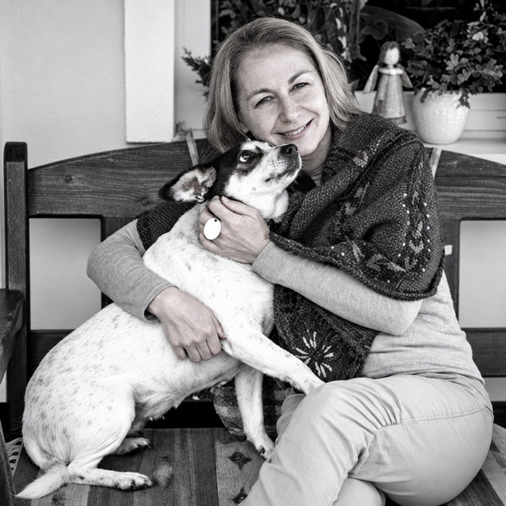

Klinická psychológia a psychoterapia · Stupava
Pomoc pre deti, dospelých a rodiny.
Som Mgr. Zuzana Krištínová, klinická psychologička a certifikovaná psychoterapeutka. V Stupave pracujem s deťmi, dospievajúcimi, dospelými, pármi a rodinami.
Osobné stretnutia v zdravotnom stredisku v Stupave.

Klinická psychologičkaatestácia v roku 2013
Certifikovaná psychoterapeutkaodborná spôsobilosť od 2023
10 rokov v detskej nemocnicionkológia a hematológia
Ambulancia v Stupavesúkromná prax od roku 2019
Pre koho
S kým pracujem
Vyberte si oblasť, ktorá je vám blízka. Na podstránke nájdete podrobnejšie informácie.
 Deti a rodinaDeti, dospievajúci a rodinyPsychologická pomoc, ktorá vníma dieťa spolu s jeho blízkymi.Viac o spolupráci
Deti a rodinaDeti, dospievajúci a rodinyPsychologická pomoc, ktorá vníma dieťa spolu s jeho blízkymi.Viac o spolupráci
 Individuálne a spoluDospelí a páryIndividuálna psychoterapia aj spoločný rozhovor vo dvojici.Viac o spolupráci
Individuálne a spoluDospelí a páryIndividuálna psychoterapia aj spoločný rozhovor vo dvojici.Viac o spolupráci
Ilustračné fotografie: Compagnons, Christian Bowen / Unsplash.

O mne
Odborná skúsenosť. Osobný prístup.
Desať rokov som pracovala s deťmi a ich rodinami na detskej onkológii a hematológii. Dnes pôsobím v súkromnej psychologickej praxi v Stupave.
Spoznať prax, vzdelanie a odborné výstupy